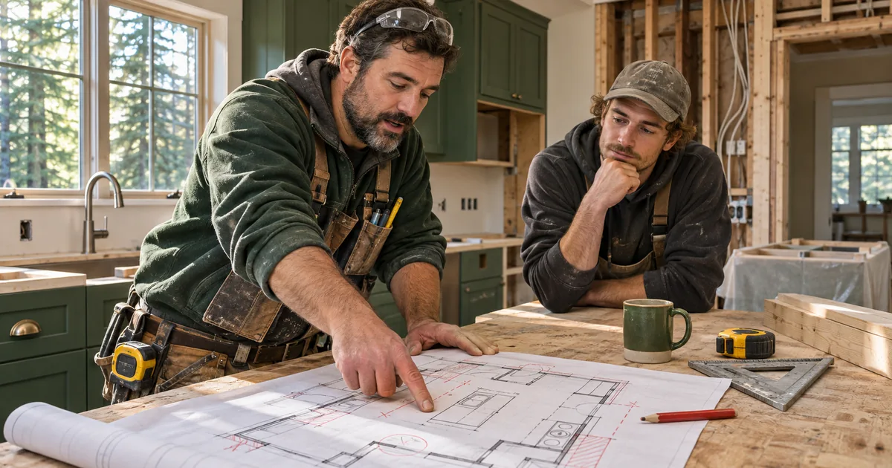

Published by ReviewRemoval. Authorship, sources and correction standards.
On this page
A homeowner sees your portfolio, checks Google and reads that your crew left a kitchen unfinished. The post describes another firm’s project. ReviewRemoval helps Canadian renovation contractors identify reviews with a credible policy issue and handle the cases they approve for reporting.
Request a free contractor assessment

Ask who was hired for the work
When several trades are on site, a homeowner may remember only the name on the sign out front. Start by asking who contracted for the specific work the review describes. Suppose a review says the countertop installers never returned to finish. The general contractor might have hired those installers, or the homeowner might have hired a separate company after the renovation. Those two facts lead to different conversations.
If your company managed that trade, address the complaint in the context of your own project. If the review clearly names a different firm that handled a separate job, the text and public business details can help show why the post may be off-topic. Google’s Maps content policies.
Check the scope, change orders and handoff notes
The Canadian Home Builders’ Association explains how written contracts set out the work and payment milestones, and how change orders record alterations. Those records can help your team establish what it was responsible for and identify who should handle a complaint. CHBA guidance on renovation contracts.
- Unrelated job. Keep the review link and highlight the detail that points to a different company, location or service. Use a public reference where possible.
- Your project, disputed details. Check the agreed scope, any changes and the timeline. A real disagreement about a delay or invoice is a service matter unless the post also raises a policy concern.
- Abusive post or payment demand. Preserve the original messages, timestamps and review URLs. A short chronology helps document what happened. Google’s extortion reporting guidance.
Keep homeowner addresses, plans and invoices private. For a first assessment, a public link and a short factual account are enough. Use the review evidence checker to organize the details.
Look at qualified estimate requests
When a review is prominent, count requests from homeowners in your service area who want the work you actually do. Compare similar weeks and record changes in ads, crew availability and season separately. Fewer serious estimate requests matter more than a change in total calls.
For a hypothetical budget check, one successful removal costs CAD $175 before applicable taxes. If a suitable project would contribute CAD $3,500 after direct job costs, the fee equals 5% of that contribution. Use your own margins to compare costs. Changes in bookings can have several causes.
Give us the facts and hand off the reporting
ReviewRemoval checks the concern for free. For approved paid work, we organize the evidence, prepare the report and follow up as agreed. Our fee is CAD $50 upfront per approved review plus CAD $125 for each successful removal, before applicable taxes. See the fee breakdown · Check what to do after an initial report.
Need help with a specific review?
Send the public link and explain which job and company the post describes. Keep client contracts and addresses in your own records.
Request a free contractor assessment